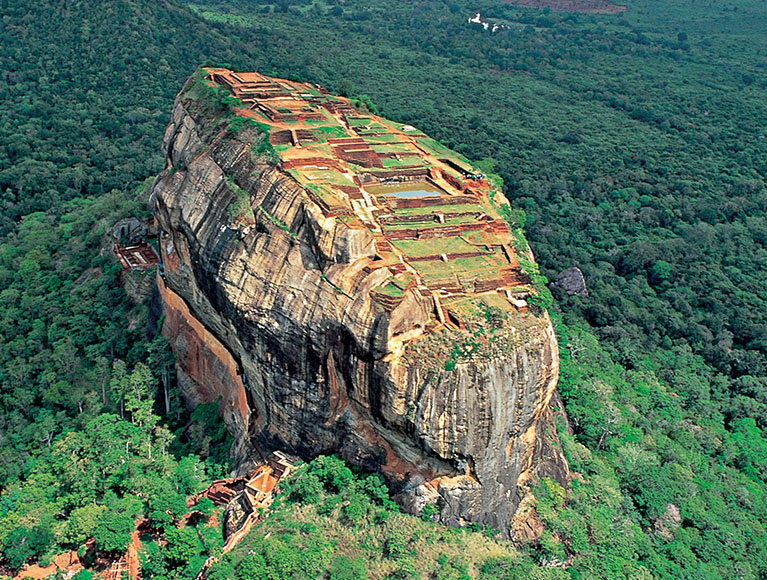
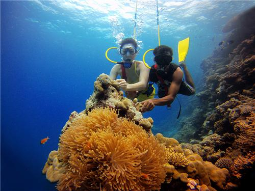
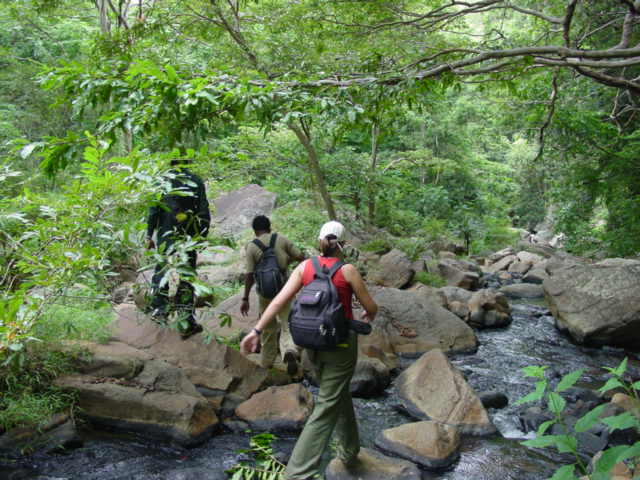
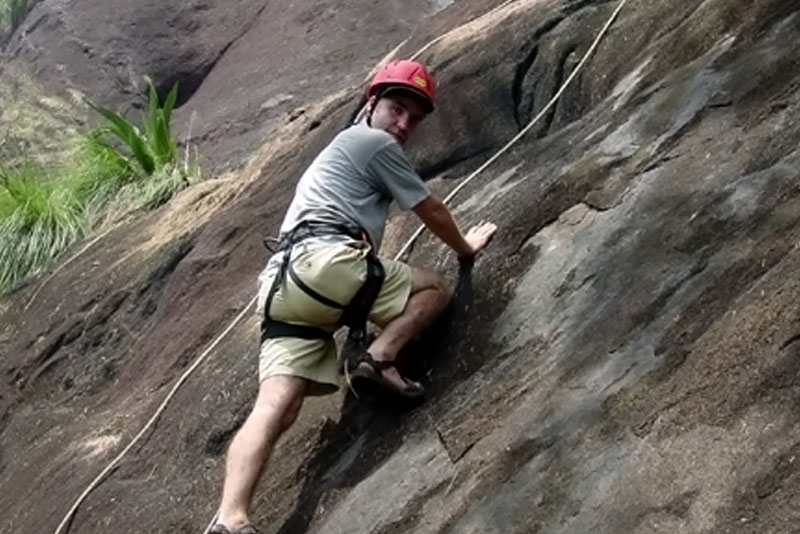
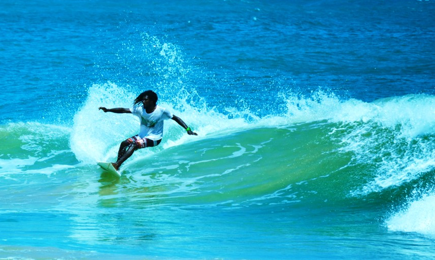
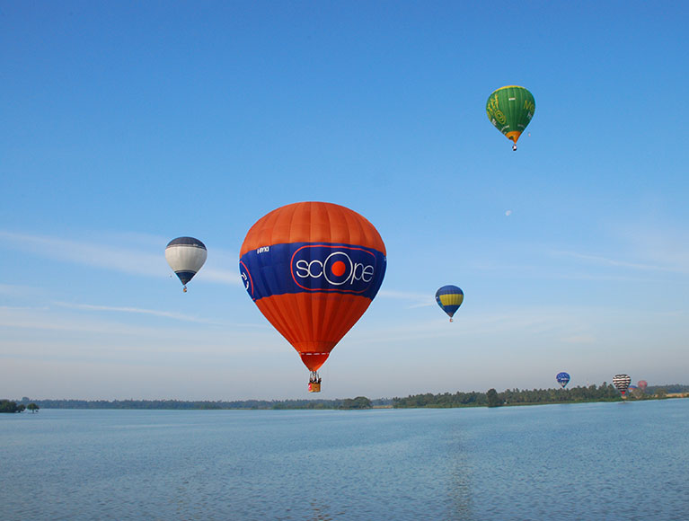
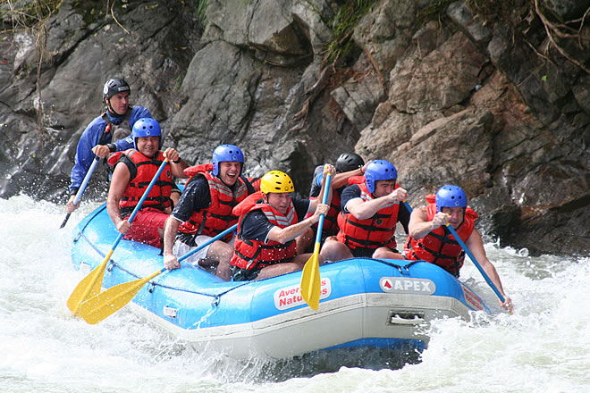
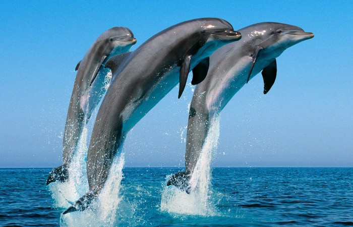
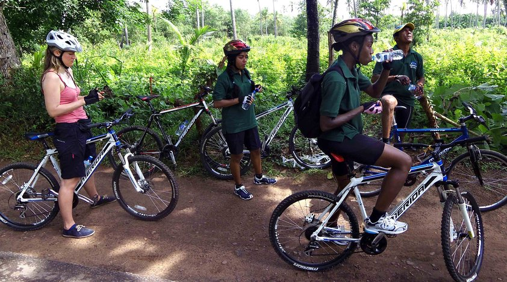

Ceylon Adventure Sports |
|  |
|
Adventure Sports |
|

DivingCompletely surrounded by the warm water of the Indian ocean, Sri Lanka offers wonderful opportunities for underwater exploration whatever your pleasure; from actively scuba diving deep in the in the ocean accompanied by schools of tropical fish to simply admiring the scene languidly from the surface through a mask and snorkel. A multitude of exotic fish, kaleidoscopic coral reefs, mystical underwater landscapes and historic ship wrecks can be explored at several easy to get to locations off the south and west coasts of Sri Lanka. |

Trekking and HikingWith multitude of roads winding through expanding mountains, lush green forests, paddy fields, parks and sleepy villages, Sri Lanka offers a plethora of opportunities to the Keen hikers and trekkers. The highlands of Sri Lanka with virgin rain forests, sacred mountains, lush tea gardens and plains filled with rare birds and insects coupled with mild temperatures and welcoming smiles of the villagers provide the ideal setting to an unforgettable walking experience. |

Rock ClimbingExperience the thrills of crumbling rocks beneath the feet, head spinning heights and the earth expanding beneath conquering the mountains of Sri Lanka. The ranges of mountains standing guard around the highlands of Sri Lanka including the Knuckles range, Ella range, Habarana, Sigiriya, Polonnaruwa, Horton Plains and Buttala provide challenging climbs to armature as well as experienced climbers. |

SurfingWith multitude of roads winding through expanding mountains, lush green forests, paddy fields, parks and sleepy villages, Sri Lanka offers a plethora of opportunities to the Keen hikers and trekkers. The highlands of Sri Lanka with virgin rain forests, sacred mountains, lush tea gardens and plains filled with rare birds and insects coupled with mild temperatures and welcoming smiles of the villagers provide the ideal setting to an unforgettable walking experience. |

Hot Air BallooningRoam the skies of Sri Lanka enjoying the signs and sites from the heavens above. Floating at heights of 500 to 2000 feet on average,effortlessly drift over the treetops, wildlife, lakes & rivers, cultural sites, local urban homesteads & landmarks like Sigiriya Rock. The sunrise rides are offered at day break to enhance the experience by accompanying the sights and sounds with magical experience of dawn. |

raftingRafting, in high adrenaline white water trip on the Kelani River is suitable for first time ‘go for it ‘rafters and experts alike. During the run you will experience the thrill of shooting rapids and the euphoria of making it through. The source of the river’s clear water is high up in the heart of the peak wilderness reserve and tumbles though a rocky gorge just above Kitulgala town. |

whale and dolping watchingThe ocean around Sri Lanka is the home to the gentle giants and the performers of the ocean. Dolphins and whales parade their presence at various locations around Sri Lanka during the months of December, January, February, March and April. Being situated on and around the migrating routes of whales and dolphins, Sri Lanka is in a vantage point to observe the migration of 26 species of cetaceans including blue whales, sperm whales, pilot whales, fin whales and a large variety of dolphins. |

CyclingCycling is one of the best ways to explore Sri Lanka. Riding along tea plantation tracks and jungle trails and the islands wonderful sunny coast line, you will experience first-hand this varied and colorful country. You will have an opportunity to mix with local people and see the real country. Our bike trails are fantastic off road adventures, combining places of interest with natural wonders off the beaten track. |
We live in a wonderful world that is full of beauty, charm and adventure. There is no end to the adventures that we can have if only we seek them with our eyes open. ~ Jawaharlal Nehru


www.ceylonadventuresports.com | (Powered by Samitha,Charith,Sameera)